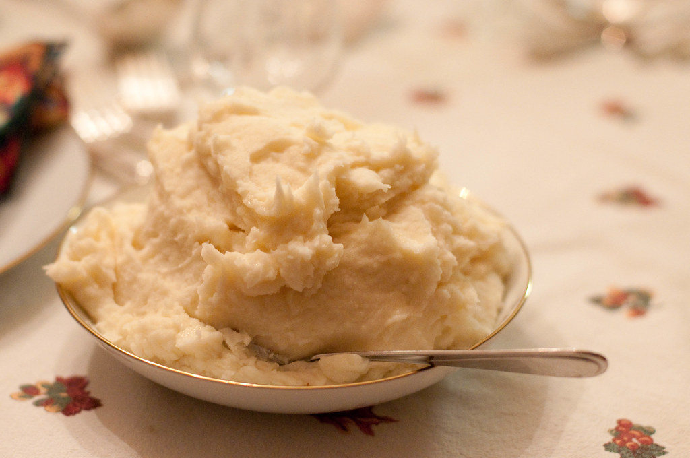

Mashed Potatoes
Home

©2010 Ernesto Andrade
How to make Mashed Potatoes
Mashed Potatoes are a classic comfort food.
Let's make restauraunt quality mashed potatoes at home!
Ingredients
- baking potatoes, peeled
- garlic cloves, peeled
- milk
- butter
- salt
- pepper
Steps
- Bring a large pot of salted water to a boil, then add the potatoes and garlic. Simmer until potatoes are soft.
- Heat milk and butter in a smaller saucpan under butter is melted
- Drain potatoes and grab a masher. Mash until potatoes are creamy and smooth.
- Season with salt and pepper.